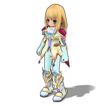
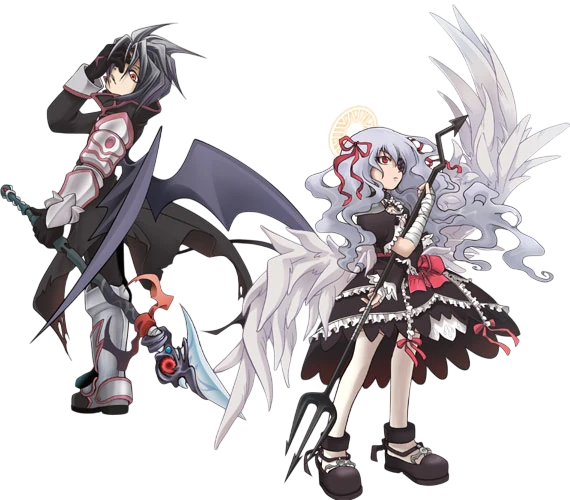
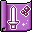
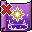
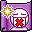
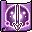
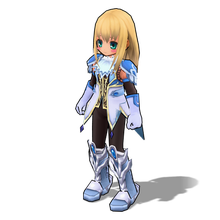
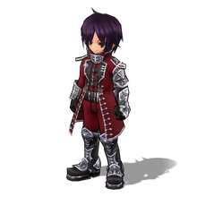
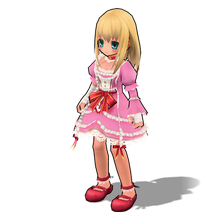

Sage Master
Sage Master

Knight set
Lv 45

How to get
- All pieces from Arus's Mother, a reward of the Lv 45 Armor Quest
Technical job · Fighter
A job that mixes physical attacks with dark spells, drains life and spends its own HP for more damage.

Requirement: STR 30 or higher, as a Knight at any Job Level.
Talk to the Sage Master and choose to browse the items on top of the shelves.
Buy a  Forbidden Book for 100,000 G.
Forbidden Book for 100,000 G.
| Lv | MP | SP | Cast time | Cooldown | Chance | Duration |
|---|---|---|---|---|---|---|
| 1 | 16 | 6 | 2 sec | 1 sec | 40% | 4 sec |
| 2 | 20 | 6 | 2 sec | 1 sec | 50% | 4 sec |
| 3 | 24 | 6 | 2 sec | 1 sec | 60% | 4 sec |
Increases damage dealt to Fairy/Element-type monsters.
| Lv | Damage bonus |
|---|---|
| 1 | +3% |
| 2 | +6% |
| 3 | +9% |
| 4 | +12% |
| 5 | +15% |

Dark WeaponActive buff · Max Lv 5| Lv | MP | Cast time | Cooldown | Dark ATK | Duration |
|---|---|---|---|---|---|
| 1 | 15 | 2.5 sec | 1 sec | +9 | 50 sec |
| 2 | 15 | 2.5 sec | 1 sec | +13 | 50 sec |
| 3 | 15 | 2.5 sec | 1 sec | +17 | 50 sec |
| 4 | 15 | 2.5 sec | 1 sec | +21 | 50 sec |
| 5 | 15 | 2.5 sec | 1 sec | +25 | 50 sec |
Deals Dark physical damage to one target.
| Lv | SP | Cast time | Cooldown | Damage rate |
|---|---|---|---|---|
| 1 | 10 | 1 sec | 3 sec | 150% |
| 2 | 15 | 1 sec | 2.5 sec | 225% |
| 3 | 20 | 1 sec | 2 sec | 300% |
| 4 | 25 | 1 sec | 1.5 sec | 375% |
| 5 | 30 | 1 sec | 1 sec | 450% |
| Lv | Auto-revive chance | HP after revive |
|---|---|---|
| 1 | 10% | 40% |
| 2 | 20% | 50% |
| 3 | 30% | 60% |
Increases physical damage against targets that currently have an abnormal status.
| Lv | Damage bonus |
|---|---|
| 1 | +12% |
| 2 | +14% |
| 3 | +16% |
| 4 | +18% |
| 5 | +20% |

Overwhelming ShadowActive field debuff · Max Lv 5| Lv | MP | Cast time | Cooldown | Field duration | Reapplied debuff |
|---|---|---|---|---|---|
| 1 | 20 | 3 sec | 0.5 sec | 30 sec | Chaos Seal, 1 sec |
| 2 | 23 | 3 sec | 0.5 sec | 35 sec | Chaos Seal, 1 sec |
| 3 | 26 | 3 sec | 0.5 sec | 40 sec | Chaos Seal, 1 sec |
| 4 | 29 | 3 sec | 0.5 sec | 45 sec | Chaos Seal, 1 sec |
| 5 | 32 | 3 sec | 0.5 sec | 50 sec | Chaos Seal, 1 sec |
| Lv | Minimum ATK/MATK bonus | Incoming damage reduction |
|---|---|---|
| 1 | +170 | 7 |
| 2 | +190 | 9 |
| 3 | +210 | 11 |
| 4 | +230 | 13 |
| 5 | +250 | 15 |
Improves Dark-element weapon and shield buffs received by the character.
| Lv | Dark Weapon bonus | Dark Shield bonus |
|---|---|---|
| 1 | Dark ATK +30, Dark DEF +0 | Dark ATK +0, Dark DEF +0 |
| 2 | Dark ATK +35, Dark DEF +5 | Dark ATK +35, Dark DEF +5 |
| 3 | Dark ATK +40, Dark DEF +10 | Dark ATK +40, Dark DEF +10 |
| 4 | Dark ATK +45, Dark DEF +15 | Dark ATK +45, Dark DEF +15 |
| 5 | Dark ATK +50, Dark DEF +20 | Dark ATK +50, Dark DEF +20 |

Chaos SealActive debuff · Max Lv 5| Lv | MP | SP | Cast time | Cooldown | Chance | Duration |
|---|---|---|---|---|---|---|
| 1 | 16 | 6 | 2 sec | 1 sec | 30% | 8 sec |
| 2 | 20 | 6 | 2 sec | 1 sec | 40% | 9 sec |
| 3 | 24 | 6 | 2 sec | 1 sec | 50% | 10 sec |
| 4 | 28 | 6 | 2 sec | 1 sec | 60% | 11 sec |
| 5 | 32 | 6 | 2 sec | 1 sec | 70% | 12 sec |
| Lv | MP | Cast time | Cooldown | Extra Dark damage taken | Duration |
|---|---|---|---|---|---|
| 1 | 8 | 0 sec | 0 sec | +16% | 25 sec |
| 2 | 9 | 0 sec | 0 sec | +20% | 25 sec |
| 3 | 10 | 0 sec | 0 sec | +24% | 25 sec |
| 4 | 11 | 0 sec | 0 sec | +28% | 25 sec |
| 5 | 12 | 0 sec | 0 sec | +32% | 25 sec |
Deals Dark magical damage and may reduce the target's S.HIT if the hit deals damage.
| Lv | MP | Cast time | Cooldown | Damage rate | S.HIT down chance | S.HIT reduction | Duration |
|---|---|---|---|---|---|---|---|
| 1 | 10 | 1.1 sec | 1 sec | 300% | 20% | 25% target S.HIT | 20 sec |
| 2 | 15 | 1.2 sec | 1 sec | 325% | 25% | 30% target S.HIT | 25 sec |
| 3 | 20 | 1.3 sec | 1 sec | 350% | 30% | 35% target S.HIT | 30 sec |
| 4 | 25 | 1.4 sec | 1 sec | 375% | 35% | 40% target S.HIT | 35 sec |
| 5 | 30 | 1.5 sec | 1 sec | 400% | 40% | 45% target S.HIT | 40 sec |
Deals physical damage and restores HP to the caster equal to 80% of the damage dealt.
| Lv | MP | Cast time | Cooldown | Damage rate | HP recovery |
|---|---|---|---|---|---|
| 1 | 24 | 1 sec | 1.5 sec | 120% | 80% of damage dealt |
| 2 | 26 | 1 sec | 1.5 sec | 140% | 80% of damage dealt |
| 3 | 28 | 1 sec | 1.5 sec | 160% | 80% of damage dealt |
| 4 | 30 | 1 sec | 1.5 sec | 180% | 80% of damage dealt |
| 5 | 32 | 1 sec | 1.5 sec | 200% | 80% of damage dealt |
| Lv | SP | Cast time | Cooldown | Added damage | HP cost per attack | Duration |
|---|---|---|---|---|---|---|
| 1 | 27 | 0 sec | 0 sec | +50 | 50 HP | 10 sec |
| 2 | 36 | 0 sec | 0 sec | +100 | 100 HP | 15 sec |
| 3 | 45 | 0 sec | 0 sec | +500 | 500 HP | 20 sec |
| Lv | MP | Cast time | Cooldown | Damage rate | Flare chance | Flare damage per tick |
|---|---|---|---|---|---|---|
| 1 | 25 | 1 sec | 1 sec | 500% | 15% | 0.9% Max HP, cap 300 |
| 2 | 36 | 1.3 sec | 1 sec | 650% | 25% | 1.2% Max HP, cap 300 |
| 3 | 45 | 1.6 sec | 1 sec | 800% | 35% | 1.5% Max HP, cap 300 |
Increases damage as HP gets lower.
| HP remaining | Damage bonus |
|---|---|
| 80% or lower | +10% |
| 40% or lower | +12% |
| 10% or lower | +15% |
Deals Neutral magical damage in a 3x3 area around the target and restores HP to the caster based on total damage dealt.
| Lv | MP | Cast time | Cooldown | Damage rate | HP recovery |
|---|---|---|---|---|---|
| 1 | 24 | 3 sec | 1 sec | 300% | 14% of damage dealt |
| 2 | 28 | 2.5 sec | 1 sec | 375% | 17% of damage dealt |
| 3 | 32 | 2 sec | 1 sec | 450% | 21% of damage dealt |
| 4 | 36 | 1.5 sec | 1 sec | 525% | 25% of damage dealt |
| 5 | 40 | 1 sec | 1 sec | 600% | 30% of damage dealt |

Flare StingActive physical attack · Max Lv 5Deals Dark physical damage and may trigger an additional Dark magical follow-up hit shortly after the attack.
| Lv | MP | SP | Cast time | Cooldown | Physical damage | Follow-up chance | Follow-up magic damage |
|---|---|---|---|---|---|---|---|
| 1 | 13 | 13 | 2.5 sec | 2 sec | 400% | 30% | 500% |
| 2 | 15 | 15 | 2 sec | 2 sec | 425% | 35% | 550% |
| 3 | 17 | 17 | 1.5 sec | 2 sec | 450% | 40% | 600% |
| 4 | 19 | 19 | 1 sec | 2 sec | 475% | 45% | 650% |
| 5 | 21 | 21 | 0.5 sec | 2 sec | 500% | 50% | 700% |
| Lv | SP | Cast time | Cooldown | Damage rate per wave | Waves |
|---|---|---|---|---|---|
| 1 | 30 | 4.5 sec | 2 sec | 140% | 5 |
| 2 | 34 | 5 sec | 2 sec | 180% | 5 |
| 3 | 38 | 5.5 sec | 2 sec | 220% | 5 |
| 4 | 42 | 6 sec | 2 sec | 260% | 5 |
| 5 | 46 | 6.5 sec | 2 sec | 300% | 5 |






